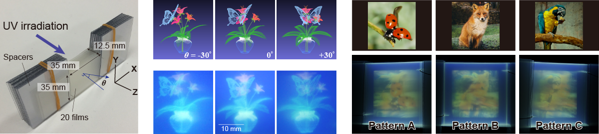

|
Ryuji Hirayama, Tomotaka Suzuki, Tomoyoshi Shimobaba, Atsushi Shiraki, Makoto Naruse, Hirotaka Nakayama, Takashi Kakue, and Tomoyoshi Ito, Scientific Reports 7, 46511 (2017) [Paper link]. |
|  |
|
In this study, a method to construct a full-colour volumetric display is presented using a commercially available inkjet printer. Photoreactive luminescence materials are minutely and automatically printed as the volume elements, and volumetric displays are constructed with high resolution using easy-to-fabricate means that exploit inkjet printing technologies. The results experimentally demonstrate the first prototype of an inkjet printing-based volumetric display composed of multiple layers of transparent films that yield a full-colour three-dimensional (3D) image. Moreover, we propose a design algorithm with 3D structures that provide multiple different 2D full-colour patterns when viewed from different directions and experimentally demonstrate prototypes. It is considered that these types of 3D volumetric structures and their fabrication methods based on widely deployed existing printing technologies can be utilised as novel information display devices and systems, including digital signage, media art, entertainment and security. |